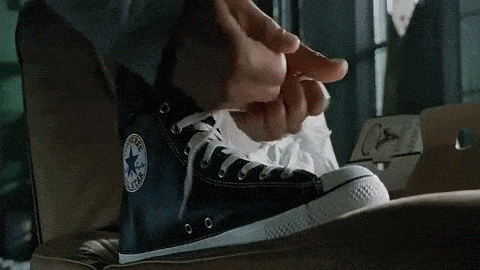

Why the ad wizards came up with this one
Advertising is everywhere and we can get overwhelmed by how much is out there. As a result, we may actively seek to avoid them. But when we watch movies, we don't often realize it can be directly embedded into what we're enjoying and even paying for. Of course, this isn't anything new and has been in practice for decades. It's now a growing multi-billion dollar industry that leverages a few fundamental concepts in its quest for your eyeballs.
-
A Captive (and Receptive) Audience
Unlike traditional advertising, we can’t skip these kinds of advertisements and we're in a relaxed and susceptible state (for the most part).
-
Part of the Story
Featured brands can be part of the storyline and given premium emphasis by progressing the plot or even as their own characters. Like our friend, Wilson.
-
Lending Credibility
 Products can not only be shown but used by movie stars. This interaction can range from subtle nods to close-up usage of the product, implying trust and an assocation. Even background cameos help.